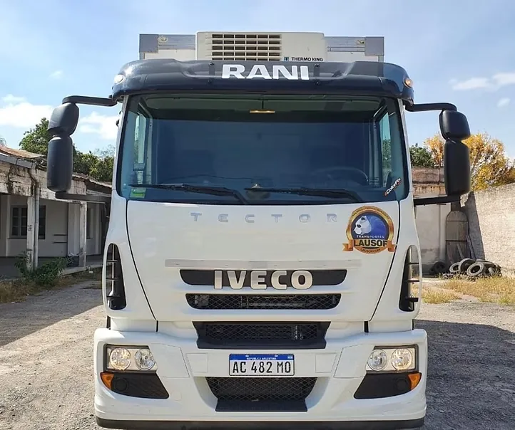
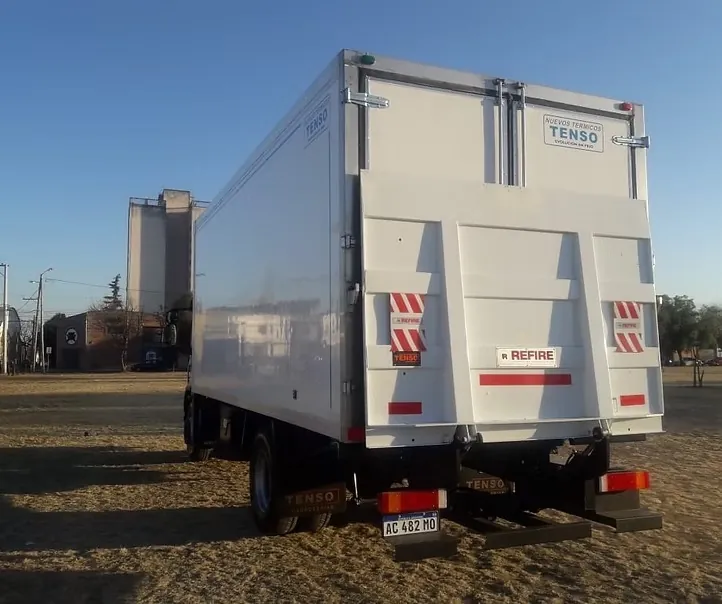
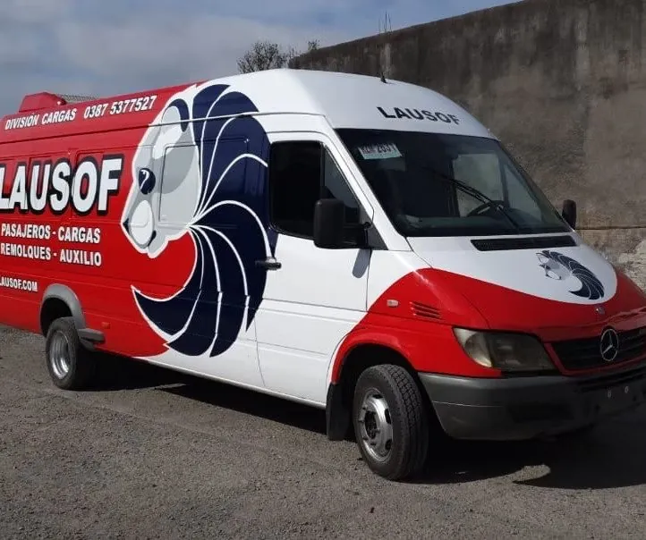
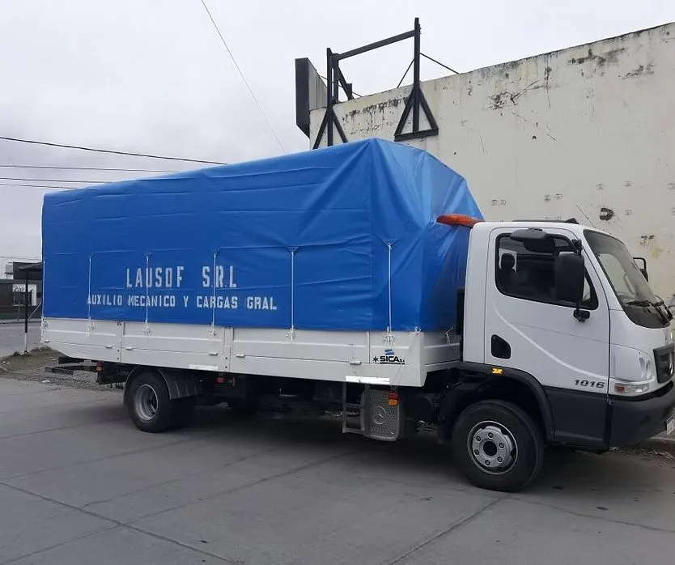

Cargas refrigeradas
Cargas refrigeradas en Salta, con cadena de frío de origen a destino.
Congelados y frescos con temperatura controlada durante todo el viaje, registro de temperatura y depósito propio con cámara frigorífica en Salta capital. Cotizamos en el día.
Temperatura controlada de origen a destino, sin cortes.
La temperatura del viaje queda registrada y documentada.
Guarda, consolidación y distribución en Salta capital.
Lausof S.R.L. — CUIT 30-71146774-9. Trabajamos con empresas.
El servicio
Transporte con cadena de frío en Salta y el NOA
Movemos congelados y frescos con temperatura controlada de origen a destino. La cadena de frío no se corta en ningún tramo: la carga viaja en camiones térmicos con equipo de frío y se entrega a la temperatura que corresponde.
Durante el viaje, la temperatura queda registrada. Si tu cliente o tu control de calidad piden constancia de cómo viajó la mercadería, la tenés.
Hacemos el tramo completo o solo la parte que necesites: retirar, guardar, consolidar o distribuir. Y como el mantenimiento de los equipos de frío se hace en nuestro propio taller, las unidades salen a la ruta en condiciones.




Equipos
Un camión refrigerado para cada destino
No todas las cargas con frío son iguales, y no todos los destinos del NOA son de asfalto. Estos son los equipos con los que trabajamos.
Para congelados y frescos con temperatura controlada durante todo el viaje.
Furgón térmico preparado para el traslado de media res colgada.
Frío hasta donde no llega un camión común: destinos de ripio y altura.
La temperatura se registra durante el viaje y queda constancia de cómo viajó la carga.
El camión 4x4 refrigerado es el menos común de los tres: mantiene la cadena de frío en caminos de ripio y en altura, donde un camión refrigerado convencional no entra. Si tu punto de entrega está fuera del asfalto, consultanos por ese equipo.
Depósito
Depósito con cámara frigorífica en Salta capital
Tenemos depósito propio con cámara frigorífica, playa de maniobras y acceso para camión, en Salta capital. Sirve para guardar mercadería con frío, consolidar cargas de distintos orígenes o distribuirlas en la ciudad y la región.
No hace falta contratar el servicio completo: podés usar solo la guarda, solo la distribución o el tramo que te falte. Contanos cómo trabaja tu operación y armamos el esquema.
Cargas generales
También fletes y cargas generales por Salta y el NOA
Además del frío, hacemos fletes y cargas generales por Salta y el norte argentino: camiones con lona, furgón y camión plancha, para distribución y cargas puerta a puerta.



Preguntas frecuentes
Lo que nos preguntan antes de cotizar
¿Qué tipo de carga llevan?
Congelados y frescos con temperatura controlada, media res en furgón con ganchos, y también cargas generales sin frío: lona, furgón y camión plancha.
¿Cómo sé a qué temperatura viajó mi carga?
La temperatura se registra durante el viaje. Queda constancia de cómo viajó la mercadería, para tu cliente o tu control de calidad.
¿Llegan a destinos de ripio o de altura?
Sí. Para los destinos donde no entra un camión refrigerado común tenemos un camión 4x4 refrigerado que mantiene la cadena de frío en ripio y altura.
¿Puedo usar solo el depósito, sin el flete?
Sí. El depósito con cámara frigorífica se puede usar por separado: guarda, consolidación o distribución, según lo que necesite tu operación.
¿Trabajan con empresas?
Sí. Somos Lausof S.R.L., CUIT 30-71146774-9, y emitimos factura A. Hablás siempre con el mismo responsable, desde la cotización hasta la entrega.
¿Tenés una carga que necesita frío?
Contanos qué llevás, desde dónde y hasta dónde. Te respondemos con la cotización en el día.
Escribinos por WhatsApp